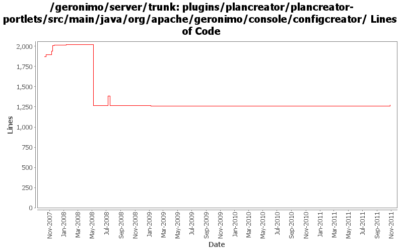

[root]/plugins/plancreator/plancreator-portlets/src/main/java/org/apache/geronimo/console/configcreator
 configData
(8 files, 2109 lines)
configData
(8 files, 2109 lines)

| Author | Changes | Lines of Code | Lines per Change |
|---|---|---|---|
| Totals | 79 (100.0%) | 707 (100.0%) | 8.9 |
| shivahr | 42 (53.2%) | 594 (84.0%) | 14.1 |
| hanhongfang | 2 (2.5%) | 38 (5.4%) | 19.0 |
| dwoods | 9 (11.4%) | 32 (4.5%) | 3.5 |
| jdillon | 19 (24.1%) | 23 (3.3%) | 1.2 |
| gdamour | 1 (1.3%) | 9 (1.3%) | 9.0 |
| djencks | 3 (3.8%) | 8 (1.1%) | 2.6 |
| gawor | 2 (2.5%) | 2 (0.3%) | 1.0 |
| jbohn | 1 (1.3%) | 1 (0.1%) | 1.0 |
GERONIMO-6206 Concise infomation rather than Exception stacktrace when create plan from a WAR. Thanks Yi Xiao for the patch.
38 lines of code changed in 2 files:
remove jee-specs config. not needed anymore
2 lines of code changed in 2 files:
a little more form cleanup
1 lines of code changed in 1 file:
GERONIMO-4484 Extraction, localization and display of messages generated in portlets. Applied common-message_fix.patch from Gang Yin.
4 lines of code changed in 3 files:
GERONIMO-4484 Extraction, localization and display of messages generated in portlets. Applied common-message-openejb.patch, common-message-activemq.patch, common-message-debugviews.patch, common-message-plancreator.patch and common-message-sysdb.patch from Gang Yin. Also updated 2 console-testsuite DB tests to match modified message strings.
28 lines of code changed in 6 files:
Reverting changes made in "Revision: 675220 GERONIMO-4189 Enable Geronimo Eclipse Plug-in (GEP) to get dynamic information from server". Geronimo Eclipse Plug-in should instead use JMX (please see GERONIMODEVTOOLS-434).
10 lines of code changed in 2 files:
GERONIMO-4146 Handle Security in EAR PlanCreator. Thanks to Shrey Banga for the patch.
2 lines of code changed in 3 files:
GERONIMO-4189 Enable Geronimo Eclipse Plug-in (GEP) to get dynamic information from server
129 lines of code changed in 2 files:
GERONIMO-3433 - Plan Creator for geronimo-application.xml - first of many patches.
281 lines of code changed in 14 files:
More loggers back to static
8 lines of code changed in 8 files:
(GERONIMO-3985) Use SLF4J as the primary logging facade for Geronimo
15 lines of code changed in 11 files:
GERONIMO-3850 Plan Creator suppresses exceptions rather than showing it to user
1 lines of code changed in 1 file:
GERONIMO-3732. Move the rest of deployment functionality out of console base and (mostly) into plugin-portlets. Revert the accidental menu name change for looking at web apps
8 lines of code changed in 3 files:
When distributing w/o the explicit selection of a target, we only distribute
to the first target returned by DeploymentManager. This first target is
the default target, or configuration store, and users can specify an abstract
name query (in EditableKernelConfigurationManager) to identify this default
target.
Now that multiple configuration stores per server are better handled
out-of-the-box, we can re-enable the "clustered" configuration stores.
Also, let's more the rmock dependency to testsupport-common so that we
can use it from all our tests.
This fixes GERONIMO-3612 - When no target configuration store is explicitly
specified while installing a configuration, the configuration should be
installed to a default configuration store
9 lines of code changed in 1 file:
GERONIMO-3430 Enhance 'Create Plan' portlet to auto handle Web Service references in a web-app
2 lines of code changed in 1 file:
GERONIMO-3430 Enhance 'Create Plan' portlet to auto handle Web Service references in a web-app
68 lines of code changed in 2 files:
GERONIMO-3429 Enhance security page of 'Create Plan' portlet to support addition of run-as-subject, default-subject, credential-store.
76 lines of code changed in 4 files:
GERONIMO-3431 Enhance 'Create Plan' portlet to auto handle references to JavaMail resources in a web-app
25 lines of code changed in 7 files:
GERONIMO-3428 Updating user documentation in "Create Plan" portlet's jsp files
+ Minor bug fixes
+ Beautify 'Resolve References' page.
0 lines of code changed in 4 files:
Exception thrown by AbstractWebModuleBuilder.createWebAppClassFinder() altered by GERONIMO-3421
0 lines of code changed in 2 files: